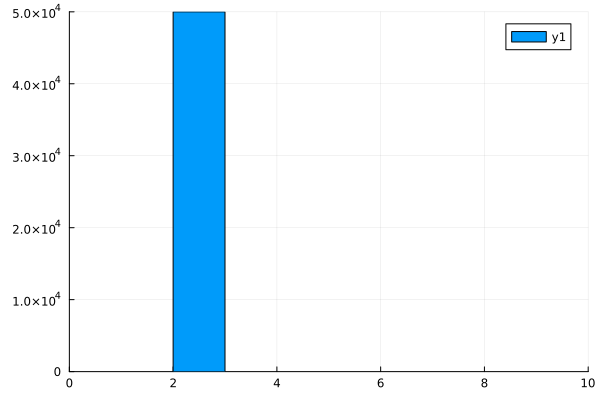
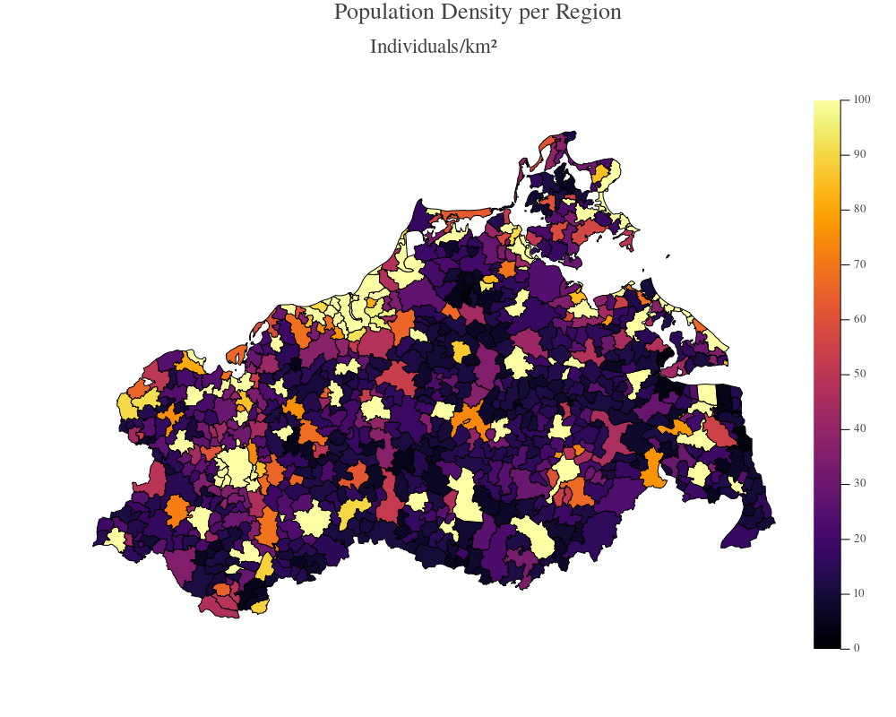
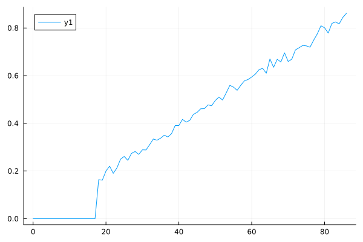

5 - Creating Populations
If you spawn the default scenario like sim = Simulation(), GEMS will generate a non-representative population with 100,000 individuals households of average size 3, schools/school classes of average size 100 and workplaces/offices of average size 5. The age distribution and household compositions is similar to the German population (not accurate, not representative).
Beyond that, GEMS has a variety of options to load or generate custom population models.
Using Parameters
You can change the default parameters mentioned above like this:
using GEMS
sim = Simulation(pop_size = 50_000, avg_school_size = 20)Available parameter options are: pop_size, avg_household_size, avg_office_size, and avg_school_size.
Using Dataframes
You can generate a custom population from a dataframe. This dataframe needs to have one row per individual and the columns must be named identical to the fields of the Individual struct. Every individual needs at least an id, an age and a sex. Therefore, these are the minimal requirements for column in your dataframe. The example below generates a synthetic population of 100,000 individuals with random ages from 1 to 100 and two individuals per household. This is achieved via the household column as two individuals with the same value will be placed in the same households. The example assigns each value from 1 to 50_000 to two of the individuals.
using GEMS, DataFrames
pop_df = DataFrame(
id = collect(1:100_000),
age = rand(1:100, 100_000),
sex = rand(1:2, 100_000),
household = append!(collect(1:50_000), collect(1:50_000))
)
my_pop = Population(pop_df)
sim = Simulation(population = my_pop)If you want to check whether the generation worked and actually only generated two-person households, you can use the Plots.jl package to generate a simple histogram of the household sizes. The . following the size function indicates that this function is applied to all elements in a vector separately; in the example to all households of the simulation.
using Plots
hh_sizes = size.(households(sim))
histogram(hh_sizes, xlims = (0, 10))Plot

We don't need to run this simulation as there is no setting except households. Therefore we won't see many infections.
Put a ? into the Julia REPL and call help?> Individual to get an overview of fields that are stored for each individual or look up the Individuals section of the API documentation.
Using Inbuilt Models
GEMS comes with inbuilt population models for each of the German states as well as a full model of Germany (attention: very large; requires 100+GB of system memory to run). You can load such a model via the state code (e.g. MV for the state of Mecklenburg-Vorpommern) like this:
using GEMS
sim = Simulation(population = "MV")Loading a new population model for the first time will spark a download of the file. The inbuilt models are geo-referencal, therefore they can be visualized using the gemsmap() function (e.g., to take a look at the population density):
gemsmap(sim, type = :PopDensityMap, clims = (0, 100))Plot

Geo-referential models are fundamentally the same as all other models but have the AGS-field (german community identification number) set for geo-referenced settings. Additionally, they can have a lat/lon value pair stored, which allows to track infection locations. Putting this data into a model manually requires the use of a settings-file (see section below).
Using Population Files
Both, CSV- and JLD2-files can be used to load population models from the harddrive. This way, you can load populations that originate from other projects or tools (like R).
CSV-files must adhere to the same data structure as in the "Using Dataframes" section. They are basically just an export of the generated dataframe. Here's an example file:
id,age,sex,household
1,12,0,1
2,75,1,1
3,35,1,2
4,63,0,2
5,32,1,2The JLD2-variant needs to store a dictionary with one key called data that contains a dataframe such as presented above in the "Using Dataframes" section.
To load such a file, simply pass the filepath as the population argument to the Simulation() function:
sim = Simulation(population = "path/to/my/population_file.csv")Using Settings-Files
All of the above examples that create populations manually, rely on input data that link individuals to a specific setting (e.g., putting an individual into a particular Office). However, GEMS also provides the option to consider hierarchical setting structures (e.g., multiple Offices forming a Department) to not only allow within-setting contacts but also between-setting contacts of a confined pool of subsettings. A so-called "settings-file" can be passed to superimpose a hierarchical setting structure:
sim = Simulation(population = "path/to/my/population.jld2", settingsfile = "path/to/my/settings.jld2")Please be aware, that a settings-file usually belongs to a specific population-file as the setting-IDs require an exact matching. Look up the settings-file section of the API documentation to learn about the internal structure of settings-files.
Adjusting Populations
In some cases, you might want to manually adjust populations after they have been loaded (e.g., to manually set a certain vaccination status for each individual). This can be done using the each!(...) function that applies a given function on each individual in a provided Population. Here's an example where we decide whether an individual has been vaccinated once with increasing probability, depending on their age. We exclude everybody below the age of 18. The sample_vacc! function that we define does just that for an individual. We then call each! to apply this function to all individuals in the population. After that, we build up a dataframe with ages and numbers of vaccinations for all individuals, group them by age, and visualize the fraction of vaccinated individuals per by age.
using GEMS, Plots, DataFrames
sim = Simulation()
pop = population(sim)
# function to adjust individual
function sample_vaccs!(i)
if age(i) >= 18 && rand(1:100) < age(i)
i.number_of_vaccinations = 1
end
end
# apply function to each individual
each!(sample_vaccs!, pop)
# plot to verify that everything worked
inds = individuals(pop)
df = DataFrame(age = age.(inds), vaccinations = number_of_vaccinations.(inds))
df_grouped = groupby(df, :age)
df_combined = combine(df_grouped, :vaccinations => (v -> sum(v) / length(v)) => :vacc_fraction)
plot(df_combined.age, df_combined.vacc_fraction)Plot
